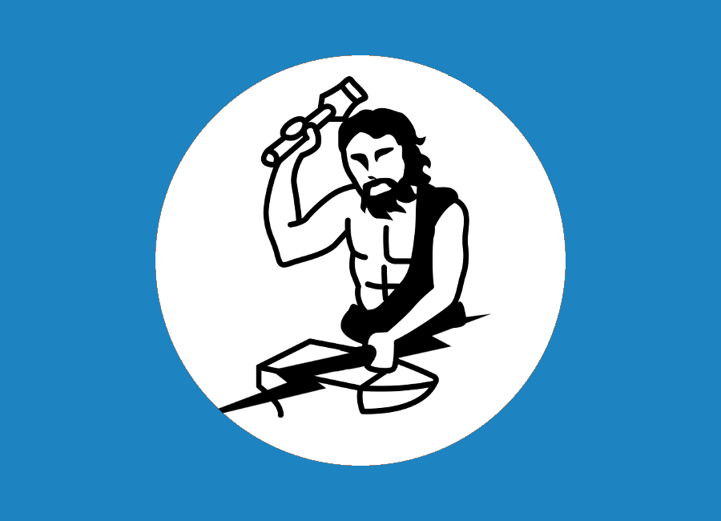

Welcome to Davide Conficconi Web Page
Ph.D. student in Information Technology@Politecnico di Milano, NECSTLab
Ph.D. student in Information Technology@Politecnico di Milano, NECSTLab
I am a third-year Ph.D. student in Information Technology at Politecnico di Milano. I am focusing on Reconfigurable Computing, particularly Field Programmable Gate Arrays (FPGAs) (from the optimized design to design automation), Domain-Specific Architecture, and Streaming-like Architectures.
I love playing basketball. I am a Spurs and Lakers fan. I mainly follow NBA news, highlights, and so on. I love reading books, mainly crime, thriller, and fantasy books. I am waiting for Martin to end "A Song of Ice and Fire." I am fond of Donato Carrisi books and popular physics books, such as those from Jim Al-Khalili and Carlo Rovelli. I also love to travel to discover new places and cultures.
Last update 17 January 2021


